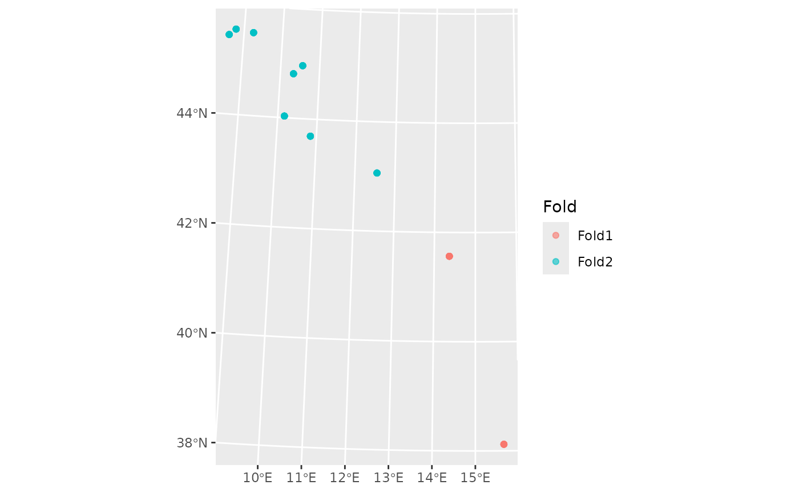
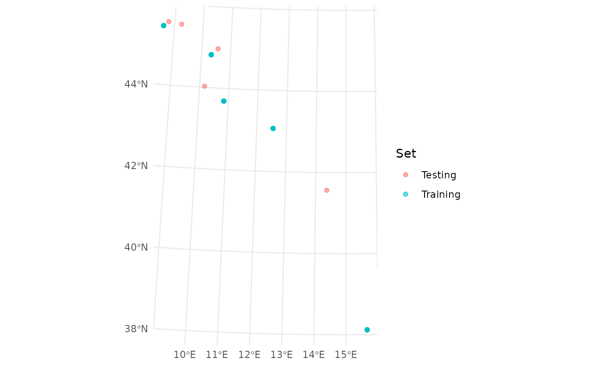
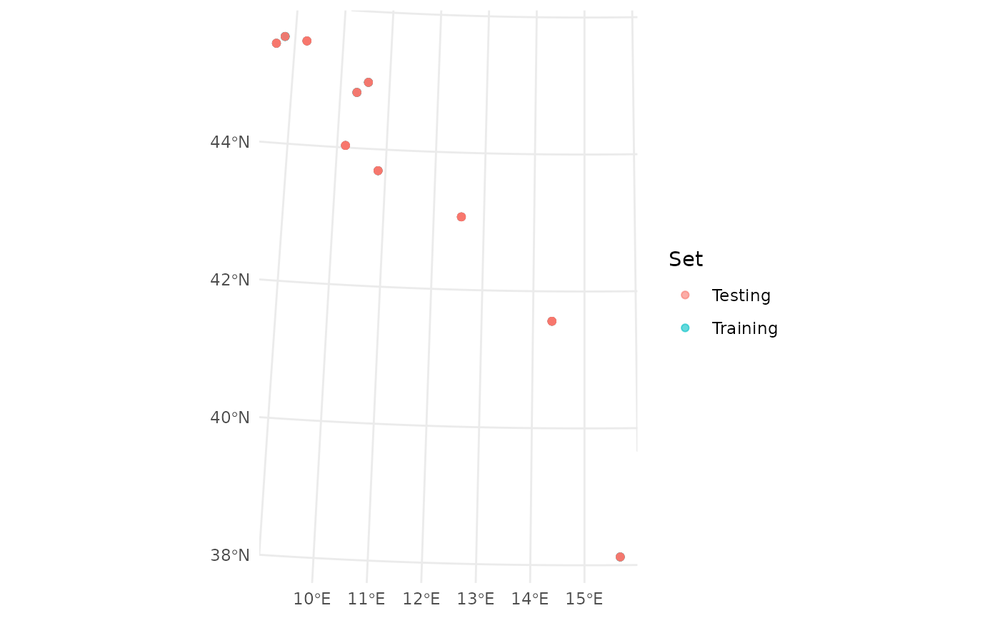

Assess Predictive Performance via Spatial Cross-Validation
Source:R/spatial_prediction.R
assess_prediction.RdThis function evaluates the predictive performance of spatial models fitted
to RiskMap objects using cross-validation. It supports two classes of diagnostic tools:
Scoring rules, including the Continuous Ranked Probability Score (CRPS) and its scaled version (SCRPS), which quantify the sharpness and calibration of probabilistic forecasts (Bolin & Wallin, 2023);
Calibration diagnostics, based on the Probability Integral Transform (PIT) for Gaussian outcomes, Average nonrandomized PIT (AnPIT) curves for discrete outcomes (e.g., Poisson or Binomial), and the area between the PIT/AnPIT curve and the reference line (Giorgi et al. 2026).
Cross-validation can be performed using either spatial clustering, regularized subsampling with a minimum inter-point distance or a user-defined test set. For each fold or subset, models can be refitted or evaluated with fixed parameters, offering flexibility in model validation. The function also provides visualizations of the spatial distribution of test folds.
Usage
assess_prediction(
object,
method,
fold = NULL,
min_dist = NULL,
size = NULL,
user_split = NULL,
iter = 1,
metrics = c("PIT", "CRPS", "SCRPS"),
keep_par_fixed = TRUE,
control_mcmc = set_control_mcmc(),
seed = NULL,
plot_fold = TRUE,
messages = getOption("RiskMap.messages", TRUE),
...
)Arguments
- object
A list of
RiskMapobjects, each representing a model fitted withglgpm().- method
Character; either
"cluster","regularized"or"user"for the cross-validation method:-
The
"cluster"method uses spatial clustering as implemented by thespatial_clustering_cvfunction from thespatialsamplepackage. The"regularized"method selects a subsample of the dataset by imposing a minimum distance, set by themin_distargument, for a randomly selected subset of locations using thesubsample.distancefunction from thespatialEcopackage. The"user"method takes a user-defined test set defined byuser_split- fold
Integer; required when
method = "cluster"- number of folds for cross-validation.- min_dist
Numeric; required when
method = "regularized"- minimum distance in kilometers for regularized subsampling.- size
Integer; the size of the test set, required when
method = "regularized".- user_split
Required when
method = "user". A user-defined cross-validation split. Either:a matrix with
nrow = n(number of observations) andncol = iter(number of iterations), where entries of1indicate membership in the test set for that iteration and0indicate training set; ora list of length
iter, where each element is either a vector of indices of the dataset to use as the test set, or a list with componentsin_id(training indices) andout_id(test indices).
- iter
Integer; number of times to repeat the cross-validation. Defaults to
1.- metrics
Character vector; one or more of
"CRPS","SCRPS"and"PIT", to specify the predictive performance metrics to compute."PIT"computes the PIT for Gaussian models or the AnPIT curve for discrete models, and also the scalar score"PIT_area", the integrated absolute deviation between the PIT/AnPIT curve and the reference line. Defaults to all metrics.- keep_par_fixed
Logical. If
TRUE(the default), the parameters are fixed at the estimates of the fitted model, which used all the data, and only the predictions are conditioned on the training set. IfFALSE, each model is re-estimated on each training set, which costs one fit per test set and model. Fixed parameters are much faster, and with many locations and few parameters the scores change little. The test observations still contribute to the fixed estimates, however, so the scores are optimistic, and more so for models with more parameters. UseFALSEto compare models with different numbers of parameters. The choice is stored in the result and printed bysummary().- control_mcmc
Control settings for simulation, an output from
set_control_mcmc().- seed
Optional non-negative integer that makes the assessment reproducible. It sets the random splits for
method = "cluster"andmethod = "regularized", and a seed for each test set, which is passed toglgpm()when the models are refitted and topredict.RiskMap(). All models share the seed of a test set, so that their predictions use common random numbers. The caller's random number state is restored on exit. WhenNULL(the default), the seeds are drawn from the session's random number generator.- plot_fold
Logical; whether to plot each iteration's test and training sets. Defaults to
TRUE.- messages
Logical, whether to report on the assessment, with a progress bar as described in riskmap_progress. Defaults to the option
RiskMap.messages, orTRUEif it is not set.- ...
Additional arguments passed to clustering or subsampling functions.
Value
A list of class RiskMap_cross_validation, containing:
- test_set
A list of test sets used for validation, each of class
'sf'.- model
A named list, one per model, each containing:
- metric
A list with CRPS, SCRPS, and/or PIT_area metrics for each fold if requested.
- PIT
(if
family = "gaussian"andmetricsincludes"PIT") A list of PIT values for test data.- AnPIT
(if
familyis discrete andmetricsincludes"PIT") A list of AnPIT curves for test data.
- keep_par_fixed
The value of
keep_par_fixed.- failures
A data frame with one row for each model and test set whose refit or prediction failed, with columns
model,test_setandmessage. The scores of these test sets areNA.
Details
A failed refit or prediction does not stop the assessment: the scores of
that test set are missing and a warning reports the failures. Test
observations with missing values in a variable used by any of the models
are left out. The predictive distributions of the test observations do not
yet include random effects, so the scores of models with re() terms are
not reliable, and a warning says so.
References
Bolin, D., & Wallin, J. (2023). Local scale invariance and robustness of proper scoring rules. Statistical Science, 38(1), 140–159. doi:10.1214/22-STS864 .
Giorgi, E., Fronterre, C. & Diggle, P. J. (2026). A decay-adjusted spatio-temporal model to account for the impact of mass drug administration on neglected tropical disease prevalence. Journal of the Royal Statistical Society Series A: Statistics in Society.doi:10.1093/jrsssa/qnag100 .
Examples
data(italy_sim)
fit <- glgpm(
formula = y ~ gp(),
data = italy_sim[1:100,],
family = "gaussian",
messages = FALSE
)
# cluster method
cross_validation <-
assess_prediction(
list(fit),
method = "cluster",
fold = 2
)

#> ℹ Parameters are fixed at the estimates from all the data.
#> ℹ Set `keep_par_fixed = FALSE` to re-estimate them in each training set.
summary(cross_validation)
#> ── Cross-validation scores ─────────────────────────────────────────────────────
#> Parameters are fixed at the estimates from all the data.
#>
#> Averages over the test sets, weighted by their sizes
#> Model CRPS SCRPS PIT_area
#> Model 1 1.2421 -1.4555 0.1094
#>
#> By test set
#> Model Test set CRPS SCRPS PIT_area
#> Model 1 1 2.2230 -1.8431 0.1634
#> Model 1 2 0.9968 -1.3586 0.0959
# regularized method
cross_validation <-
assess_prediction(
list(fit),
method = "regularized",
size = 5,
min_dist = 1
)

#> ℹ Parameters are fixed at the estimates from all the data.
#> ℹ Set `keep_par_fixed = FALSE` to re-estimate them in each training set.
summary(cross_validation)
#> ── Cross-validation scores ─────────────────────────────────────────────────────
#> Parameters are fixed at the estimates from all the data.
#>
#> Averages over the test sets, weighted by their sizes
#> Model CRPS SCRPS PIT_area
#> Model 1 1.3441 -1.4828 0.1471
#>
#> By test set
#> Model Test set CRPS SCRPS PIT_area
#> Model 1 1 1.3441 -1.4828 0.1471
# user method with a matrix
cross_validation <-
assess_prediction(
list(fit),
method = "user",
user_split = matrix(
sample(c(rep(1, 50), rep(0, 50))),
ncol = 1)
)
#> ℹ Parameters are fixed at the estimates from all the data.
#> ℹ Set `keep_par_fixed = FALSE` to re-estimate them in each training set.
summary(cross_validation)
#> ── Cross-validation scores ─────────────────────────────────────────────────────
#> Parameters are fixed at the estimates from all the data.
#>
#> Averages over the test sets, weighted by their sizes
#> Model CRPS SCRPS PIT_area
#> Model 1 0.2490 -0.6533 0.0404
#>
#> By test set
#> Model Test set CRPS SCRPS PIT_area
#> Model 1 1 0.2490 -0.6533 0.0404
# user method with a list
cross_validation <-
assess_prediction(
list(fit),
method = "user",
user_split = list(
sample(100, 50))
)

#> ℹ Parameters are fixed at the estimates from all the data.
#> ℹ Set `keep_par_fixed = FALSE` to re-estimate them in each training set.
summary(cross_validation)
#> ── Cross-validation scores ─────────────────────────────────────────────────────
#> Parameters are fixed at the estimates from all the data.
#>
#> Averages over the test sets, weighted by their sizes
#> Model CRPS SCRPS PIT_area
#> Model 1 0.2490 -0.6515 0.0577
#>
#> By test set
#> Model Test set CRPS SCRPS PIT_area
#> Model 1 1 0.2490 -0.6515 0.0577